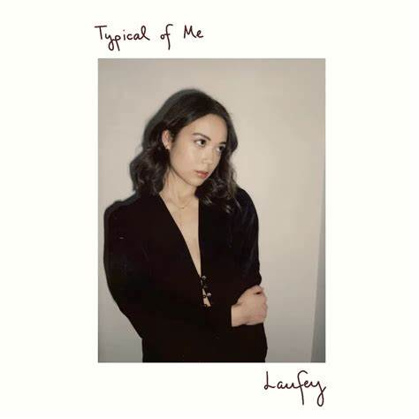

Laufey
Members:
- Laufey
- Junia
- Various Orchestras
All of her albums:
- Typical of Me EP

- This was her first full project release. This project includes her debut single "Street by Street." This album includes songs about wanting to love, or wanting to
be loveable. It has a shorter track list of only 7 songs but still contains many songs that are considered among her best by fans.
- Everything I Know About Love
- Her second project, but her first full album release. Laufey herself described this album as "hopelessly romantic" and an album of personal growth.
A lot of the songs are crafted from personal experiences of hers but are written to be fiction.
- Bewitched/Bewitched: Goddess Edition
- This is her most recent studio album and her most well known. This album has catapulted her into the spotlight, even getting a musical performance on Jimmy Fallon.
Bewitched recieved the deluxe version titled "Bewitched The Goddess Edition" and this contained 4 new songs, all of which are extremely popular.